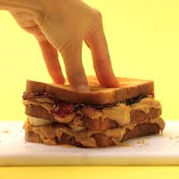

The PB & Jam Sandwich

Simple, Easy and Underated.
This beauty became my favourite sandiwch at 6 years old and I still within
my top 5 today. I first came across it when watching a film with my mum
called "Overboard" - Kurt Russel and Goldie Hawn, and I asked what was in
it. Mum being the legend she is replied "I'll show you". She went out to
the local Safeways, bought some PB and procceded to change my life
forever.
Ingredients
-
Peanut Butter (be nice to the monkeys and go for 0 palm oil. I go for
Crunchy PB)
-
Jam (any flavour you like, it can be fancy, cheap, homemade - I aim for
Strawberry or Raspberry).
-
Bread (again any one you like.. But my FAVOURITE for
this particular sandwich is "Warburtons medium sliced white bread")
The How Too
- Get 2 pieces of bread. One for PB. One for Jam
- Smother one slice gererously with the PB
-
Discard the spreading tool. DO NOT PUT IT IN THE JAM - YOU WILL BE FOUND
OU AND GET INTO TROUBLE WITH YOUR OTHER HALF.
- Spread Jam onto other slice of bread.
- Thank the Universe for this wonderful creation
- ENJOY IT (I am jealous your eating it right now)